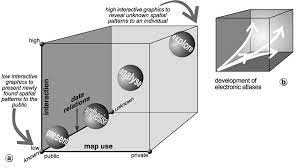

Prepare For Class 12 Readings
Visualize This by Nathan Yau- Spatial Data
Make sure you either have longitude and latitude data, or map addresses or other data available into latitude and longitude.
Place latitude and longitude coordinates on a map (symbols function in maps R package is a useful resource).
If point order is relevant, connect points with lines.
If some scale variable such as population is relevant, scale points by that variable, creating a bubble plot.
Regions are useful to organize multiple points by state, county, country, etc.
Scale variables can use color to denote value rather than scale.
When data for regions varies over time, multiple small graphs can be used with variations in color to show change. Alternatively, you can visualize the change in the data over time in a single plot, or use animation.
Displaying Spatial, time Series, and Space-Time Data with R by Oscar Lamigueiro- Spatial Data
R packages for spatial data
sp package implements class of points, grids, lines, rings, and polygons
raster package creates, reads, writes, and manipulates raster data
rasterVis package creates \visualizations for raster data
maptools package manipulates and reads geographical data as well as provides interface wrappers for other packages
gstat package provides geostatistical functions
maps package can create and draw geographical maps
Thematic maps provide information about specific locations focusing on a single variable
proportional symbols vary the scale of various symbols to represent a variable’s scale
choropleth maps shade regions based on a variable’s value
raster maps use a matrix data structure, and can contain a wealth of categorical or continuous data to visualize such as elevantion, tempature, latitude, and longitude
vector fields store magnitude and direction or various datapoints, and can be visualized with plots such as arrow plots and stream line plots
Reference maps focus on geographical locations such that a theoretical user could ascertain information about their position or route. Physical maps include elevation information
The Map Use Cube

The map use cube shows four main intents for graphing (presentation, synthesization, analyzation, and exploration) based on their use in public vs. private domains, high vs. low interaction, and known vs. unknown data relation. The progression from intents and scale seems to be consistent, with an increase in privatization, unknown data relations, and interaction leading the intent from presenting to synthesizing to analyzing to exploring. However, we do not see a intent for an unknown data relation in the private domain for example. While certainly some about of presentation can happen in the private domain and some low-interaction graphs could be implemented for unknown data relations, I believe the visual is trying to get across the bigger trend of unknowns fostering more interaction done in private domains, slowly going through the pipeline to analyze and synthesize before the more polished, less interactive graphs are presented to a public audience.
Regarding high-dimensional plots with the map use cube, I think that because high-dimensional graphics can show more variables, they may be more in use with interactive graphics to view relationships all at once without changing out variables. However, for public, static graphs, high-dimensional graphics could also be used to forgo interaction for the sake of the public or to get more attention.
Temporal and Spatial Dimensions
As mentioned by Yau and Lamigueiro, temproal and spatial dimensions can be visualized in a variety of ways. To begin, time can be shown by connecting points with lines to show continuation of perhaps an airplane trip. Time could also be shown with multiple small plots, plotting change, or animation. As for spatial dimensions, the most basic visualization of space is by showing latitude and longitude as an x and y axis, though spatial data can also be grouped based on region. The three elements I would consider starting with to visualize temporal and spatial dimensions are point plots using latitude and longitude, choropleth maps to group spatial data and shade based on a theme variable, and animations to show changes over time.